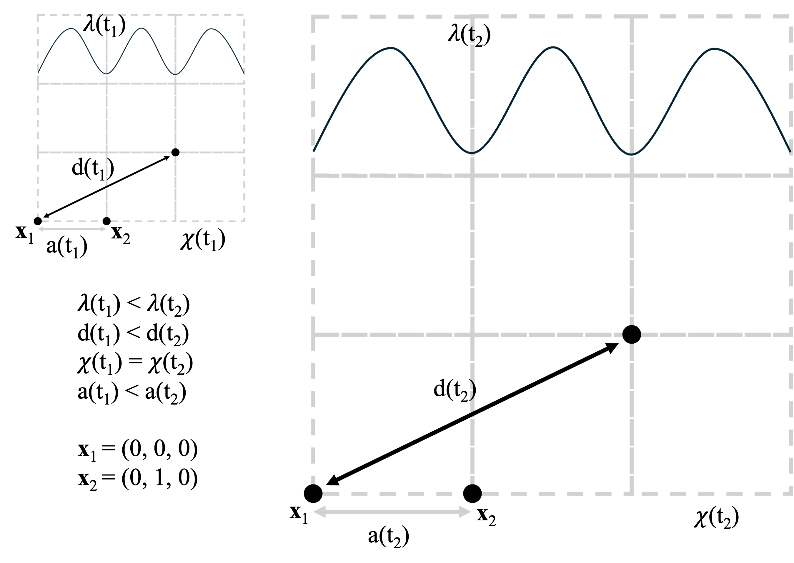
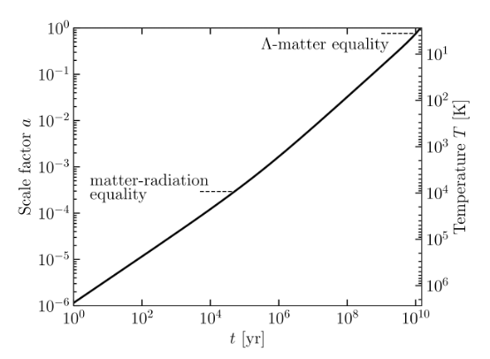
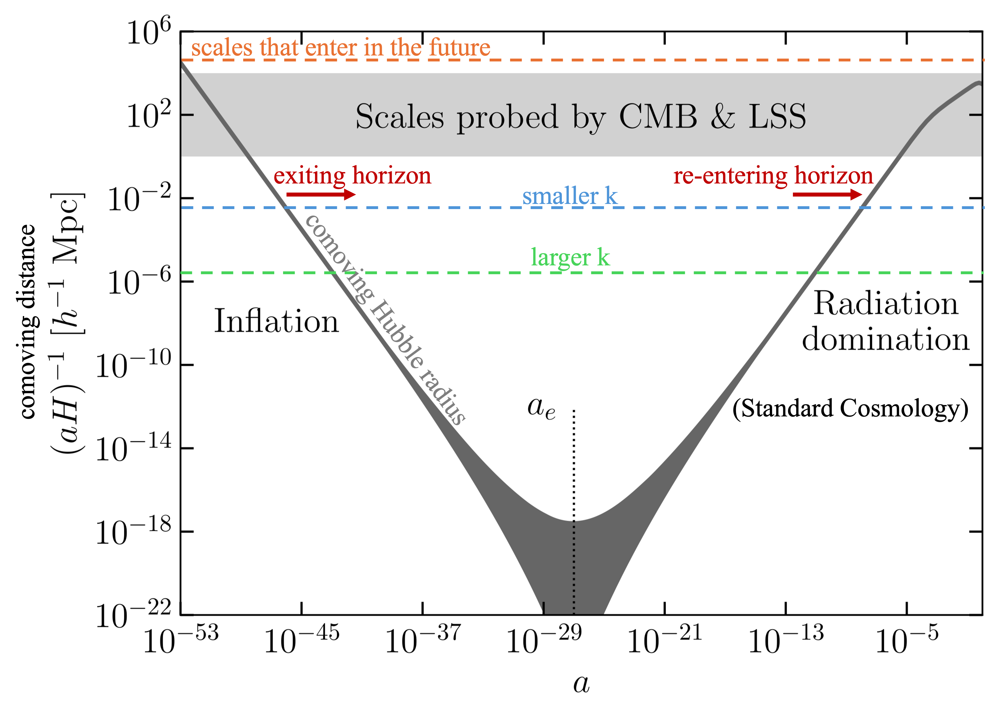
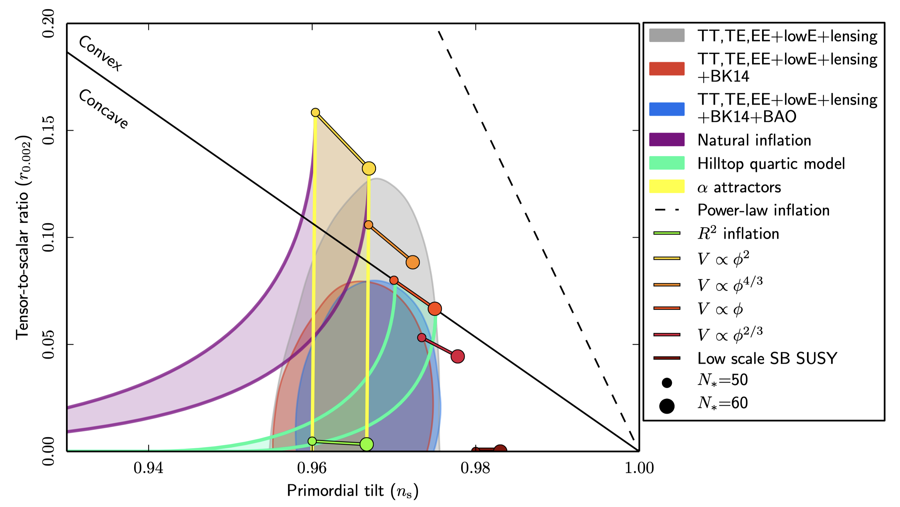
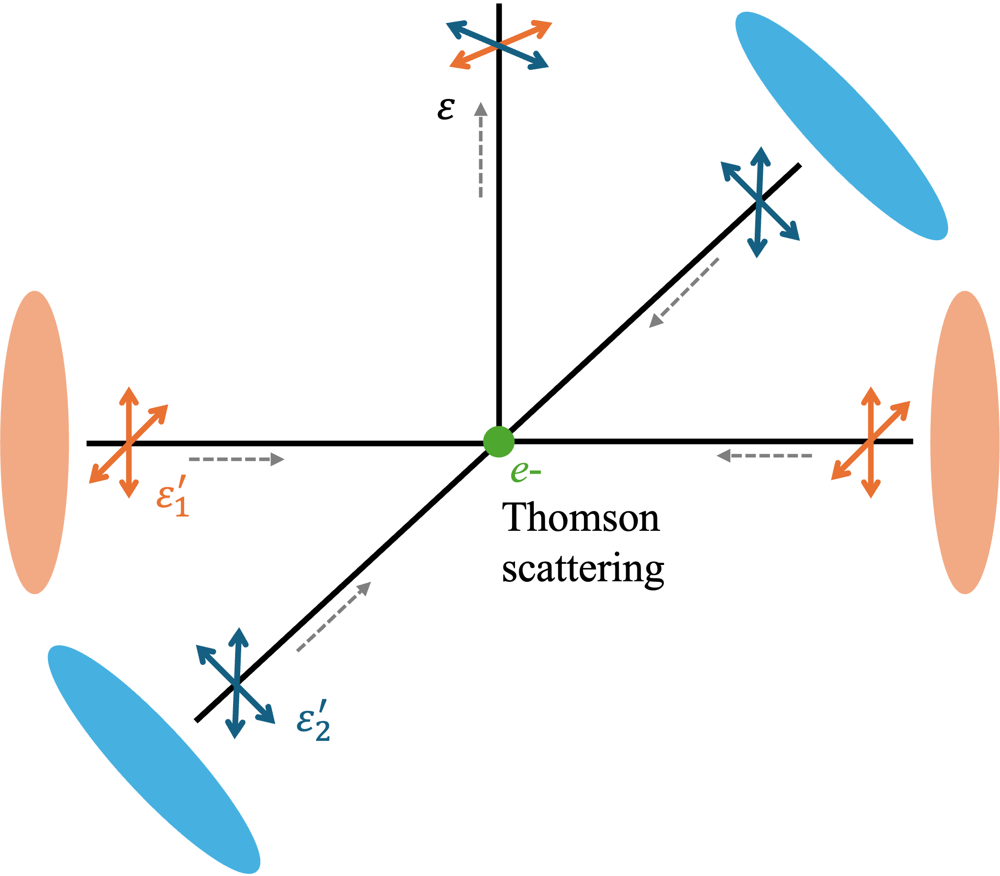
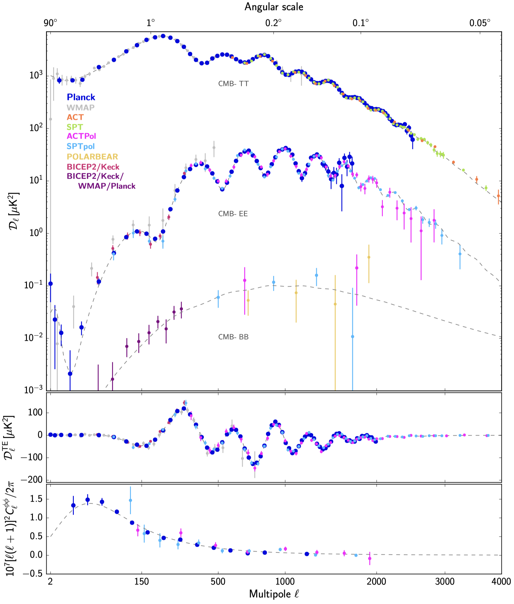
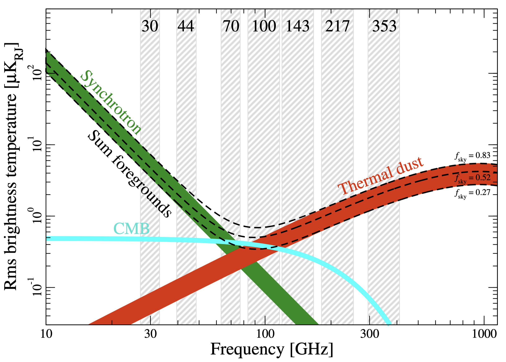
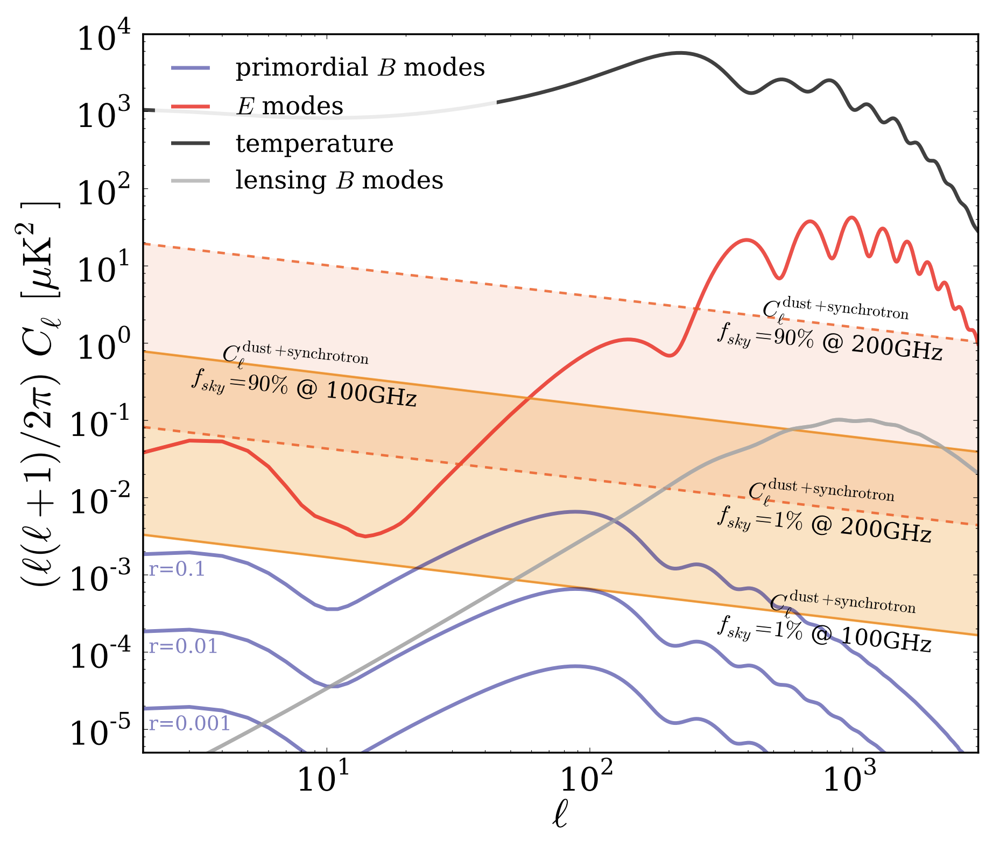

2 The Cosmic Microwave Background
The cosmic microwave background (CMB) is the oldest light in the universe and a powerful probe of cosmic history. Characterization of the CMB combined with ancillary data has led to the establishment of the standard cosmological model (\(\Lambda\)CDM) (e.g. (Efstathiou, Bond, and White 1992)). Experiments like the Simons Observatory (SO) and CMB-Stage 4 (CMB-S4) are attempting to find evidence for inflation, a superluminal expansion of space-time soon after the universe began (The Simons Observatory Collaboration 2019; K. N. Abazajian et al. 2016). A definitive measurement of r, the tensor-to-scalar ratio of CMB polarization, would provide an energy scale for inflation, solve issues in \(\Lambda\)CDM, and usher in a new era of science (Baumann 2009; Seljak and Zaldarriaga 1997; Kamionkowski, Kosowsky, and Stebbins 1997; Kamionkowski and Kovetz 2016). Experiments like SO and CMB-S4 will also study particle physics beyond the Standard Model by constraining the sum of neutrino masses, probing the nature of dark energy and dark matter, and enabling a model-independent search for light relic particles from the early universe. This chapter provides a basic theoretical framework to contextualize the work described in the rest of this thesis. While this chapter is a review of some key discoveries, more thorough explanations can be found in any good cosmology textbook (e.g. Modern Cosmology (Dodelson and Schmidt 2020)), the CMB-S4 Science Book (K. N. Abazajian et al. 2016), the Particle Data Group reviews (Group et al. 2020), or any Planck or WMAP papers (e.g. (The Planck Collaboration 2020a; Hinshaw et al. 2009)). Throughout this chapter, we will set \(c = \hbar = 1\).
2.1 The Expanding Universe
In Chapter 1, the Big Bang paradigm was briefly discussed. The early universe was a hot, dense, highly energetic environment. Thus, its constituents (consisting of a primordial plasma) were in thermal equilibrium. As the universe expanded, this plasma cooled below some nuclear binding energies (\(T\lesssim1\) MeV) until eventually light elements could form. Once this process known as Big Bang Nucleosynthesis (BBN) was complete, the universe cooled further until Compton scattering became inefficient (see (Cyburt et al. 2016) for more details on BBN). Thus, photons decoupled from the electrons and baryons around \(T\lesssim1\) eV. This period of recombination where neutral hydrogen could form released the decoupled CMB photons to free stream to us today. The CMB is described amazingly well by a blackbody spectrum (see the figure) with the best estimate of the CMB temperature as: \(T = 2.7255 \pm 0.0006\)K, as measured by the COBE satellite (Efstathiou, Bond, and White 1992). Note that the universe today is largely composed of diffuse, ionized gas and so a period of reionization must have occurred later in time.
The current most compelling mathematical framework of the universe is encompassed in the \(\Lambda\)CDM model (often referred to as the “standard model" of cosmology). This model describes a universe dominated by dark energy (parameterized by the cosmological constant \(\Lambda\)) and cold dark matter (CDM), with much smaller contributions from ordinary baryonic matter and radiation. \(\Lambda\)CDM assumes an expanding universe, starting from a hot, dense plasma to the sparse, isotropic, and homogeneous cosmic web we observe today. The universe cooled and expanded, and the CMB was released as the universe turned transparent. Thermal radiation decoupled from the protons and electrons, which recombined to form neutral hydrogen (i.e. recombination, or more accurately, “last scattering" era) about 375,000 years after the beginning of the universe. Quantum fluctuations in an infant universe were the seed perturbations we observe as anisotropies in the CMB, as well as the source of gravitational feedback necessary to form large scale structure (LSS). The CMB can act as a “backlight" for LSS formation and evolution. An extension of the \(\Lambda\)CDM model is the inflationary theory, which aims to tackle key issues within \(\Lambda\)CDM. This theory postulates a superluminal, quasi-exponential expansion roughly \(10^{-35}\) seconds after the universe began. See this section for a more detailed treatment of inflation.
The most basic assumption of \(\Lambda\)CDM is that the universe is homogeneous and isotropic on the largest scales (order \(\gtrsim100\) Mpc). The universe is also often referred to as being Euclidean (or “flat"), which has been experimentally measured by e.g. Planck (The Planck Collaboration 2020a). This is really a statement on the geometry of the universe, which can really be either Euclidean (no curvature), open (negative curvature), or closed (positive curvature). Homogeneity means that there is no preferred place, and isotropy means that there is no preferred direction in the universe (Ryden 2003). Many properties of the CMB can be described with linear perturbation theory starting with the basic homogeneity and isotropy assumption. (Gravitational lensing of the CMB delves into the non-linear power spectrum since we start dealing with the effects of LSS on the CMB photons. See this section for more information on gravitational lensing.) However, as we start looking at smaller scales, we start to deviate into a non-linear regime where linear perturbation theory breaks down. Gravity pockets cause large local density contrasts, thereby violating our assumptions of small deviations from isotropy and homogeneity. These inhomogeneities in the universe imply structure formation.


Note that another way of claiming homogeneity is saying that the metric is the same everywhere in our universe. We deviate from the standard special relativity metric \(\eta_{\mu\nu}\) by replacing Minkowski space with now an expanding universe. This expansion is parameterized by the scale factor \(a(t)\). We set \(a(t_0) = 1\) where \(t_0\) is today as per the usual convention, such that the scale factor was smaller when the universe was younger (and less stretched). The current most widely accepted mathematical framework to describe cosmology used in this thesis features solutions where \(a = 0\) is a singularity which has been termed Big Bang (and thus is often referred to as the “standard Big Bang model of cosmology"). This scale factor is also conveniently related to redshift \(z\) such that:
\[1 + z \equiv \frac{a_{obs}}{a_{emit}},\]
where \(a_{obs} = 1\) if observing today. To better visualize this, refer to the figure. Instead of thinking in terms of a physical distance \(d\) which grows larger with the expansion of spacetime and can be tricky to use1, it is often more meaningful to turn to the comoving distance \(\chi (t)\). The total comoving distance traversed by light from a distant object (with no peculiar velocity) to reach us today at \(t_0\) is:
\[\label{eqn:ch2:comovingdist} \chi (t) = \int_{t}^{t_0} \frac{dt'}{a(t')}\]
In this thesis, we focus on largely the linear regime for an expanding, Euclidean universe, which can be described by the Friedmann–Lemaître–Robertson–Walker (FLRW) metric:
\[g_{\mu\nu} = \begin{pmatrix} -1 & 0 & 0 & 0 \\ 0 & a^2(t) & 0 & 0 \\ 0 & 0 & a^2(t) & 0 \\ 0 & 0 & 0 & a^2(t) \end{pmatrix}\]
The spacetime metric can be summarized in the following equation:
\[\begin{aligned} \label{eqn:ch2:metric} ds^2 &= -dt^2 + a^2(t) d\vec{x}^2 \nonumber \\ &= -dt^2 +a^2(t)[dr^2 + S_k^2(r)d\Omega^2] \end{aligned}\]
In the second line of (), we have expanded the space component (\(d\vec{x}^2\)) defined on a maximally symmetric 3-manifold more explicitly to hyperspherical coordinates, where \(\Omega\) is the usual solid angle with \(d\Omega^2 = d\theta^2 + \sin^2\theta d\phi^2\). \(S_k(r)\) is defined as follows, where \(r\) is the comoving radial distance and \(k\) is spacetime curvature2:
\[\label{eqn:ch2:Skmetric} S_k(r) \equiv \begin{cases} \frac{\sin(\sqrt{k}r)}{\sqrt{k}}, &k > 0 \text{ (positive curvature)}\\ r, &k = 0 \text{ (no curvature)}\\ \frac{\sinh(\sqrt{\lvert k \rvert}r)}{\sqrt{\lvert k \rvert}}, &k < 0 \text{ (negative curvature)} \end{cases}\]
Closer examination of how \(a(t)\) evolves requires breaking down the constituents of the universe into radiation, matter, and dark energy. In the next section we turn to relating the geometry of the universe to its constituents (i.e. its energy composition).
2.2 General Relativistic Framework to Cosmology
We can start with the stress-energy tensor \(T^\mu_{\ \nu}\) of a perfect fluid3 for an isotropic, smooth universe to describe the energy and momentum flow for a given system:
\[\label{eqn:ch2:Tperfectfluid} T^\mu_{\ \nu} = \begin{pmatrix} -\rho & 0 & 0 & 0 \\ 0 & p & 0 & 0 \\ 0 & 0 & p & 0 \\ 0 & 0 & 0 & p \end{pmatrix},\]
where \(\rho\) is the energy density and \(p\) is the pressure. Note that the trace of this tensor is thus Tr\((T^\mu_{\ \nu}) = T^\mu_{\ \mu} = -\rho + 3p\). We can understand local conservation of energy and momentum with the usual method - taking a derivative. However, to circumvent coordinate dependence of the usual partial derivatives4 in obtaining conservation equations, we turn to covariant derivatives in general relativity: \[\nabla_\mu V^\nu = \partial_\mu V^\nu + \Gamma^\nu_{\mu\lambda}V^\lambda\]
Note that this derivative is a partial derivative plus an additional component that utilizes the “connection" coefficient (or Christoffel symbol) \(\Gamma\), which is defined for our purposes as: \[\Gamma^\sigma_{\mu\nu} = \frac{1}{2}g^{\sigma\rho} (\partial_\mu g_{\nu\rho} + \partial_\nu g_{\rho\mu} + \partial_\rho g_{\mu\nu})\]
For flat space in Cartesian coordinates, the Christoffel connection vanishes. In non-Cartesian (e.g. curvilinear) or curved spaces, this coefficient is necessary. For a detailed treatment on the derivation, purpose, and utilization of connection coefficients in general relativity, please refer to any good general relativity textbook (e.g. (Carroll 2003; Misner, Thorne, and Wheeler 1973; Wald 1984)).
Taking the covariant derivative of the stress-energy tensor leads to the conservation of energy equation: \[\begin{aligned} \label{eqn:ch2:EMtensorconservation} 0 &= \nabla_\mu T^\mu_{\ \nu} \nonumber\\ &= \partial_\mu T^\mu_{\ \nu} + \Gamma^\mu_{\lambda\mu} T^\lambda_{\ \nu} - \Gamma^\lambda_{\mu\nu} T^\mu_{\ \lambda} \end{aligned}\]
Looking at the \(\nu = 0\) component (as the other \(\nu\) components vanish in a smooth universe) reduces the above to: \[\label{eqn:ch2:intermediateconservation} 0 = \partial_0\rho + 3\frac{\dot{a}}{a}(\rho + p)\]
To relate the energy density to the pressure, we adopt a simple equation of state with some scaling factor \(w\):
\[\label{eqn:ch2:eqnofstate} p = w\rho\]
Rearranging and solving () we get:
\[\frac{\dot{\rho}}{\rho} = -3(1 + w)\frac{\dot{a}}{a}\] \[\rho(a) \stackrel{w = const.}{\propto} a^{-3(1 + w)}\]
Let’s now again consider the three basic constituents of the universe one at a time:
Matter is defined as non-relativistic and having no pressure. As the universe expands, matter becomes diluted proportional to the volume element. Thus the energy density of matter is dominated by its rest energy and falls as the universe expands: \(\rho_{matter} \propto a^{-3}\), and \(w = 0\) in the equation of state.
Radiation is relativistic. Like matter, its energy density falls with number density. However, there is additional energy loss due to the redshift (i.e. stretching of its wavelength as shown in the figure). Thus the energy density of radiation falls faster than matter as the universe expands: \(\rho_{rad} \propto a^{-4}\), and \(w = 1/3\) in the equation of state.
Dark energy (or the cosmological constant) by definition has a constant energy density. Thus we are left with: \(\rho_{\Lambda} \propto a^{0}\), and \(w = -1\) in the equation of state.
Putting this together with the figure, we can see that the universe likely started out radiation-dominated when it was hot and dense. Because the energy density of radiation falls faster than that of matter, matter would have dominated the energy density of the universe for some period of time. Very recently, it seems that dark energy has become dominant.
Now that we understand the composition of the universe, we can turn back to relating it to its geometry. Energy and momentum encapsulated in the stress-energy tensor (\(T^\mu_{\ \nu}\)) affects spacetime curvature. Typically, we can describe spacetime curvature mathematically with the Riemann (“curvature") tensor shown in (Eq. ch2.riemann), where an object only affected by gravity will follow the path of a geodesic (the equivalent of a straight line in curved spacetime). The geodesic equation is given in (). Note that in Euclidean space with Cartesian coordinates, the geodesic equation simplifies to the familiar straight line equation \(d^2x^\mu/d\lambda^2 = 0\).
\[\label{eqn:ch2:riemann} R^\rho_{\ \sigma\mu\nu} = \partial_\mu\Gamma^\rho_{\nu\sigma} - \partial_\nu\Gamma^\rho_{\mu\sigma} + \Gamma^\rho_{\mu\lambda}\Gamma^\lambda_{\nu\sigma} - \Gamma^\rho_{\nu\lambda}\Gamma^\lambda_{\mu\sigma}\]
\[\label{eqn:ch2:geodesic} \frac{d^2x^\mu}{d\lambda^2} + \Gamma^\mu_{\rho\sigma} \frac{dx^\rho}{d\lambda} \frac{dx^\sigma}{d\lambda} = 0\]
We can use a more symmetric pseudo-Riemannian tensor to describe our spacetime by contracting the first and third indices in (). This is the Ricci tensor, shown in () after relabelling the indices. Intuitively we can think of the Ricci tensor as describing how spacetime deviates from Euclidean locally (i.e. “curves") for a small volume moving along a geodesic. In our 3-dimensional manifold, the simple Ricci tensor encodes necessary information from the more complex Riemann tensor.
\[\begin{aligned} \label{eqn:ch2:riccitensor} R_{\mu\nu} &= R^\lambda_{\ \mu\lambda\nu} \nonumber \\ &= \partial_\lambda\Gamma^\lambda_{\mu\nu} - \partial_\nu\Gamma^\lambda_{\mu\lambda} + \Gamma^\lambda_{\alpha\lambda}\Gamma^\alpha_{\mu\nu} - \Gamma^\lambda_{\alpha\nu}\Gamma^\alpha_{\mu\lambda} \end{aligned}\]
We can also take the trace of the Ricci tensor to derive the Ricci (or “curvature") scalar as shown in (). The Ricci scalar gives the scalar curvature of some Riemannian manifold, and captures the intrinsic curvature of spacetime at that point.
\[\label{eqn:ch2:ricciscalar} R = R^\mu_{\ \mu} = g^{\mu\nu}R_{\mu\nu}\]
We can now piece together Einstein’s field equations as follows, where \(G\) is the usual gravitational constant:
\[R_{\mu\nu} - \frac{1}{2}Rg_{\mu\nu} = 8 \pi G T_{\mu\nu}\]
Let’s define:
\[G_{\mu\nu} \equiv R_{\mu\nu} - \frac{1}{2}Rg_{\mu\nu}\]
And rearrange to get:
\[\label{eqn:ch2:einsteineqn} G_{\mu\nu} + \Lambda g_{\mu\nu} = 8 \pi G T_{\mu\nu}\]
The above equation includes a cosmological constant \(\Lambda\), which was not originally present in Einstein’s original published work. It has since been added and removed, and stuck back on again to explain the acceleration of the expansion of the universe in the late 1990s (Perlmutter et al. 1999; Riess et al. 1998). Thus, currently the terms cosmological constant and dark energy are used interchangeably for the purposes of this thesis. Dark energy is also theorized to be the vacuum energy in the universe (i.e. the zero point energy in quantum mechanics). For ease of finding solutions in the FLRW metric, let’s absorb the cosmological constant into the stress-energy tensor as shown in (). For the cosmological constant, \(w = -1\) and thus \(\rho = -p\) according to (), and we can see this clearly by manipulating (). We define \(\rho_\Lambda \equiv \Lambda/(8\pi G)\).
\[\label{eqn:ch2:tensordarkenergy} T^{\ \ \mu}_{(\Lambda) \ \nu} = \begin{pmatrix} -\rho_\Lambda & 0 & 0 & 0 \\ 0 & -\rho_\Lambda & 0 & 0 \\ 0 & 0 & -\rho_\Lambda & 0 \\ 0 & 0 & 0 & -\rho_\Lambda, \end{pmatrix}\]
We can solve the Einstein field equations in a FLRW metric to derive the Friedmann equations (so called “first" and “second" respectively) below. Here \(k\) again refers to spacetime curvature as in ().
\[\label{eqn:ch2:friedmann1} \left(\frac{\dot{a}}{a}\right)^2 = \frac{8\pi G}{3}\rho -\frac{k}{a^2}\]
\[\label{eqn:ch2:friedmann2} \left(\frac{\ddot{a}}{a}\right)^2 = \frac{4\pi G}{3}(\rho + 3p)\]
At this point we have seen the useful quantity \(\dot{a}/a\) a few times - it is the Hubble parameter and describes the rate of expansion:
\[H \equiv \frac{\dot{a}}{a}\]
Current measurements of the Hubble parameter today give a Hubble constant of: \(H_0 \approx 70 \pm 10\) km/s/Mpc5. See Table for the current best estimate. We can also parameterize density by defining a critical density:
\[\rho_{c} = \frac{3H_0^2}{8\pi G}\]
Using this, we can define the density parameter below, where the subscript \(i\) refers to any of the universe’s constituents: matter (e.g. cold dark matter, baryons), radiation (e.g. photons, neutrinos), or a cosmological constant.
\[\Omega_i = \frac{\rho_i}{\rho_c}\]
Rewriting the first Friedmann equation below in terms of these values gives a more intuitive look at how different geometries, components (e.g. matter, radiation, dark energy), and expansion rates describe the universe. Note that \(\Omega_k = 1 - \Omega_0\) refers to the curvature (treated like a pseudo-energy density). \[\begin{aligned} \label{eqn:ch2:friedmanndensities} \frac{H^2(t)}{H_0^2} &= \frac{\rho(t)}{\rho_c} \nonumber\\ &= \frac{\Omega_{rad}}{a^4} + \frac{\Omega_{matter}}{a^3} + \frac{\Omega_{k}}{a^2} + \Omega_\Lambda \end{aligned}\]
| Parameter | Planck + BAO Estimate |
|---|---|
| \(\tau\) | \(0.0561 \pm 0.0071\) |
| \(n_S\) | \(0.9665 \pm 0.0038\) |
| \(H_0\) | \(67.66 \pm 0.42\) |
| \(\Omega_\Lambda\) | \(0.6889 \pm 0.0056\) |
| \(\Omega_{matter}\) | \(0.3111 \pm 0.0056\) |
| \(\sigma_8\) | \(0.8102 \pm 0.0060\) |
| \(\sum m_\nu [eV]\) | \(< 0.120\) |
| \(N_{eff}\) | \(2.99^{+0.34}_{-0.33}\) |
| \(\Omega_k\) | \(0.0007 \pm 0.0019\) |
The current best estimates for these parameters are summarized in Table .
2.3 Inflation
While we have described the evolution of the universe, the initial conditions required to set this up is a more complex problem. The highly specific features we observe today cannot be posited from a radiation-dominated period soon after the Big Bang. Major inconsistencies that need to be addressed in this \(\Lambda\)CDM model are listed below. The most widely accepted solution is the inflationary theory, which provides a mechanism to create the initial quantum fluctuations that grow to the structure we see today.
Magnetic monopole problem: Why are there no magnetic monopoles observed in the universe? Grand Unified Theories (GUT) predict magnetic monopoles (Hooft 1974; Polyakov 1974), but have yet to be experimentally verified. One of the original reasons for an inflationary solution was to solve the GUT monopole issue as a method to dilute the monopole density (A. Linde 2005; Group et al. 2020).
Horizon problem: Why is the universe so homogeneous and isotropic? I.e. why are regions that were not in causal contact the same temperature? FLRW universes demand particle horizons due to the Big Bang singularity and finite age of the universe. Photons can thus only have traveled some finite distance. We know the horizon at the surface of last scattering was \(z\simeq1100\) corresponding to roughly 100 Mpc in size. From our observations, this horizon subtends \(\sim1^{\circ}\) but the CMB is uniform to 1 part in \(10^5\)! Inflation allows for these causally disconnected regions to have been in thermal equilibrium and allows statistical uniformity in its perturbations with a period of superluminal, quasi-exponential expansion of spacetime.
Flatness problem: Why is the universe so flat? The flatness of the universe (i.e. \(1 - \Omega_{tot,0}\ll1\)) demands a finely tuned set of initial conditions. As can be deduced by looking at (), any deviations from flatness in the curvature term would grow exponentially over time. Inflation provides a solution with the same mechanism for the above horizon problem, where the exponential expansion drives the universe curvature to zero.
Initial conditions problem: How did the seed perturbations needed to form the large scale structure we see today arise? Inflation provides a mechanism for the nearly scale-invariant perturbations we observe, where these quantum fluctuations are guaranteed byproducts of the field driving inflation. (Heisenberg Uncertainty Principle provides the natural lower bound on how many fluctuations.)
The inflationary theory was first suggested in the early 1980s as a solution to all of the above problems (Guth 1981; A. D. Linde 1982). In this section we focus on single-field, slow-roll inflation in particular, which is what many CMB experiments are probing. One prediction of single-field inflation is the generation of adiabatic perturbations, where for any species \(s\) the fractional density perturbations are the same: \(\frac{\delta\rho_s}{\rho_s} = \frac{\delta\rho}{\rho}\). Modern experiments have observed and verified that the initial conditions should be adiabatic, Gaussian, and roughly scale-invariant amongst other signatures of inflation.
We can start by breaking down the major effect of an inflationary period: there was some finite time of accelerated expansion where the universe drastically increased in size. If we change the limits on (Eq. ch2.comovingdist) to get the comoving distance from \(t' = 0\) to \(t\), then the integral gives us the comoving horizon, \(\eta\). This \(\eta\) is the logarithmic integral of the comoving Hubble radius \(R_H = 1/aH\), which encapsulates the time it takes for the scale factor to increase by a factor of \(e\) (termed an “e-fold"). We can see in the figure that inflation solves the horizon problem by introducing a period where \(R_H\) decreases. The initial quantum mechanical perturbations are better understood in Fourier space, where each mode is denoted by \(k\) (i.e. the comoving wavenumber). The relevant scales that were causally connected were thrown outside of the horizon via inflation, and then re-entered over time as our required initial conditions. Re-entering into the horizon simply means that the comoving wavelength is of order \(R_H\), and thus \(k\lesssim aH\) is when the perturbation became observable6.

We know that inflation must have ended, which rules out a constant vacuum energy such as dark energy as the driver of inflation (although it would have likely been a similar form of energy with \(p < 0\)). The simplest dynamical solution involves the inflaton, which is a term for the vacuum energy given by the potential of a scalar field \(\phi\) driving inflation. This would have been the dominant energy density during inflation and remained constant during the expansion. Thus, we can start with the canonical Lagrangian density (where \(L = \int \mathcal{L} \,d^3x\)):
\[\mathcal{L}_\phi = - \frac{1}{2}g^{\mu\nu}\partial_\mu \phi\partial_\nu\phi - V(\phi)\]
Note that because we adopt a \((- + + +)\) metric, the first term has a negative sign. Also, because we are considering a spacetime with metric \(g_{\mu\nu}\), the infinitesimal volume element we consider is now \(d^4x \rightarrow d^4x\sqrt{-g}\), where \(g \equiv det(g_{\mu\nu})\). By varying the action (i.e. \(S = \int d^4x\sqrt{-g}\mathcal{L}\)) with respect to spacetime, we can derive the Euler-Lagrange equations shown in (). See any quantum field theory textbook for more details, although this treatment does not really require more than a classical mechanics level understanding. For the associated action, we can write the stress-energy tensor (which, remember, is a preserved quantity by definition):
\[T_{\mu\nu} = \partial_\mu\phi\partial_\nu\phi + \left[\frac{1}{2}g^{\rho\sigma}\partial_\rho\phi\partial_\sigma\phi - V(\phi)\right]g_{\mu\nu}\]
\[\begin{aligned} \label{eqn:ch2:inflationeqofmotion} 0 &= \frac{\partial(\sqrt{-g}\mathcal{L})}{\partial\phi} - \frac{d}{dx^\mu}\left(\frac{\partial(\sqrt{-g}\mathcal{L})}{\partial(\partial_\mu\phi)}\right) \nonumber\\ &= \Box\phi - \frac{dV}{d\phi} \end{aligned}\]
Assuming a homogeneous background field (i.e. \(\partial_i\phi = 0\) where \(i = \{1,2,3\}\) such that only time derivatives matter) and comparing \(T^{\mu\nu}\) for a perfect fluid (see ), we can derive the following equations for the energy density and pressure. Note that spatial gradients get redshifted (i.e. disappear) with expansion, and so we ignore them here at zeroth order (which also adhere to our demands for a flat spacetime after expansion). The first is using only the \(T^0_0\) component to derive an energy density:
\[\label{eqn:ch2:inflationrho} \rho = \frac{1}{2}\dot{\phi}^2 + V(\phi)\]
The second is using only the \(T^i_i\): \[\label{eqn:ch2:inflationp} p = \frac{1}{2}\dot{\phi}^2 - V(\phi)\]
Using these equation and the conservation of the stress-energy tensor (\(\nabla_\mu T^\mu_{\ \nu} = 0\); see () and ()), we can write () more intuitively below. Note that \(V'(\phi) = \frac{dV}{d\phi}\) here.
\[\begin{aligned} \label{eqn:ch2:kgeqnofmotion} 0 &= \frac{d\rho}{dt} + 3H(\rho + p) \nonumber \\ &= \ddot{\phi}\dot{\phi} + V'(\phi)\dot{\phi} + 3H\left(\frac{1}{2}\dot{\phi}^2 + V(\phi) + \frac{1}{2}\dot{\phi}^2 - V(\phi)\right) \nonumber\\ \Rightarrow 0 &= \ddot{\phi} + 3H\dot{\phi} + V'(\phi) \end{aligned}\]
What we just did here is start with the Klein-Gordon action for curved spacetime on a scalar field, and then effectively reduce it to a Klein-Gordon equation of motion ().
The accelerated expansion that is demanded by inflation (i.e. \(\ddot{a} > 0\)) is a similar requirement to that of dark energy where we need a negative pressure to adhere to the negative equation of state. Looking at (), we can see that negative pressure requires more potential energy than kinetic energy. The equation () also tells us that we need a shallow potential to achieve this. In space, this field acts like a simple harmonic oscillator where the Hubble parameter acts as a damping term, so a large \(H\) will dampen motion as the field rolls down the potential. If the field “rolls slowly" down this potential, the low kinetic energy will stay below a non-zero potential energy allowing for the required negative pressure. Once the minimum of this potential is reached, inflation ends and we exit into a decelerated expansion after \(\phi\) decays into lighter particles through a currently unknown process. This chain of reactions required to transition from the inflationary period into the radiation-dominated era is known as reheating.
These “slow-roll" requirements can be described by the dimensionless slow-roll parameters \(\epsilon\) and \(\eta\)7:
\[\epsilon \equiv \frac{1}{16\pi G}\left(\frac{V'}{V}\right)^2 \ll 1\]
\[\eta \equiv \frac{1}{8\pi G}\left(\frac{V''}{V}\right)^2 \ll 1\]
We can take the reduced scalar-field FLRW metric Friedmann equation, with the second line coming from the Hubble damping at the time of expansion allowing potential energy to dominate:
\[\begin{aligned} \label{eqn:ch2:energyscalefriedmann} H^2 &= \frac{8\pi}{3m_p^2}\left(\frac{1}{2}\dot{\phi}^2 + V\right) - \frac{k}{a^2} \nonumber \\ &\simeq \frac{8\pi}{3m_p^2}V(\phi) \end{aligned}\]
Here, \(m_p\) corresponds to Planck mass, which we have left in to make the equation more intuitive. Note that the second line above also tells us \(\epsilon \ll 1\). How long inflation lasts is written in terms of “e-folds" to denote logarithmic expansion rates, as described earlier. To fulfill the isotropy, homogeneity, and flatness requirements, the universe must have undergone greater than 40 e-folds. To satisfy the GUT scale inflation (\(10^15\) GeV), the universe must have undergone over 60 e-folds.
While modern CMB experiments are focused on testing single-field, slow-roll inflation by constraining r, there are also other theorized extensions of \(\Lambda\)CDM that aim to solve its intrinsic issues. There are multi-field inflationary models as well, and observatories like the Simons Observatory large aperture telescope and SPHEREx mission will be searching for evidence of primordial non-Gaussianity (Doré et al. 2018). We can test inflationary theories by looking at large-scale structure. By measuring the statistics of inflationary signatures in galaxy distributions in the form of large-scale galaxy 2-point and 3-point correlations, we can probe primordial non-Gaussianity. This non-Gaussianity is parameterized by the \(f_{NL}\) parameter, which provides a test of single-field versus multi-field models. This could provide significant improvements over constraints derived from 3-point functions of CMB anisotropies. Another competitor is the ekpyrotic universe, where the universe goes through cyclical expansion and contraction punctuated by “bounces" to reverse the Hubble rate sign (Khoury et al. 2001).
The single-field, slow-roll inflation we described in some detail predicts density perturbations and primordial gravitational waves. We can disentangle this model from the rest by searching for these elusive primordial gravitational waves, which are considered a smoking-gun signature for this theory. In the next section, we will discuss the details of these primordial perturbations.
2.4 Primordial Scalar and Tensor Perturbations
Inflation (or any other hypothesized mechanism for generating primordial perturbations) can theoretically produce scalar, vector, and tensor modes. This classification is really a distinction in transformation properties under spatial rotations. Scalar modes correspond to density perturbations in the spacetime, vector modes correspond to vorticity (and decay away in cosmological scenarios with an expanding universe8), and tensor modes correspond to gravitational waves (and are transverse trace-free perturbations to the metric).
\[\label{eqn:ch2:perturbationsonfield} \phi(\vec{x}, t) = \Bar{\phi}(t) + \delta\phi(\vec{x}, t)\]
\[\label{eqn:ch2:perturbationsonmetric} g_{\mu\nu} = g_{\mu\nu}^{(0)} + h_{\mu\nu}\]
These perturbations can be realized by thinking of these quantum fluctuations as small deviations (\(\delta\phi(\vec{x}, t)\)) from a uniform background scalar field (\(\Bar{\phi}(t)\)) as shown in (). Similarly, we can also see the perturbative effect on the FLRW metric (where \(g_{\mu\nu}^{(0)}\) is the usual homogeneous FLRW metric) as shown in ().
Recall from section , that these perturbations9 are better understood in Fourier space, where each mode is denoted by \(k\) and uncorrelated from another mode. The variance of these perturbations is nonzero, and can be described by a power spectrum. Power spectra generally provide statistical information over some scale (here, it is a spatial scale), and we can quantify the perturbations in terms of their power spectrum \(P_\delta(\vec{k})\) from the following 2-point function (or correlation function):
\[\langle\delta(\vec{k})\delta(\vec{k'})\rangle = (2\pi)^3\delta_D^{(3)}(\vec{k} - \vec{k'})P(k)\]
We can also look at a dimensionless power spectrum for convenience: \(\Delta^2(k) \sim k^3P(k)\). Note that many CMB texts and papers will use “power spectrum" or \(P(k)\) to really mean “scale invariant power spectrum" such that the \(k^3\) factor shows up in the correlation function. This has evolved from the fact that the CMB has been observed to be mostly scale-invariant (with a slight tilt), which means that \(k^3P(k)\) is roughly constant. The scalar and tensor perturbations are both scale-free, which can be seen in any good cosmology textbook! The tilt we observe in the CMB is another success of the inflationary paradigm: the field rolling down a potential well during inflation results in a slight red-tilt where the larger-scale modes have larger amplitudes because they exited the horizon earlier. We can quantify the (tilted) scalar primordial perturbations as follows:
\[\begin{aligned} \label{eqn:ch2:scalarpwrspec} P_{\mathcal{R}}(k) &= 2\pi^2\mathcal{A}_Sk^{-3}\left(\frac{k}{k_p}\right)^{n_S - 1} \nonumber \\ &= \left.\frac{2\pi H^2}{k^3m_p^2\epsilon}\right\rvert_{aH = k} \end{aligned}\]
Here \(k_p\) is a “pivot scale" usually chosen to match \(Planck\): \(k_p = 0.05 \text{ Mpc}^{-1}\). Note that \(P_{\mathcal{R}}(k)\) is the power spectrum of so-called “curvature perturbations" \(\mathcal{R}\). The quantity \(\mathcal{R}\) is convenient because it is gauge-invariant, and is indeed is a curvature perturbation in comoving gauges (but this is less obvious in other gauges). We use \(\mathcal{A}_S\) to define the curvature perturbation variance, and \(n_S\) is the scalar spectral index. In the second line, we have equated the scalar power spectrum to \(\epsilon\), the slow-roll parameter10 defined in this section (and \(m_p\) refers again to the Planck mass, which we have left in here). The primordial scalar spectral index measures the scalar tilt:
\[n_S(k) - 1 = \frac{d\ln P_{\mathcal{R}}(k)}{d\ln k} \sim \left.-6\epsilon + 2\eta\right\rvert_{aH = k}\]
Similarly, we can quantify the tensor primordial perturbations as follows:
\[\begin{aligned} P_{T}(k) &= 2\pi^2\mathcal{A}_Tk^{-3}\left(\frac{k}{k_p}\right)^{n_T} \nonumber \\ &= \left.\frac{32\pi H^2}{k^3m_p^2}\right\rvert_{aH = k}, \end{aligned}\]
where the primordial tensor spectral index is:
\[n_T(k) = \frac{d\ln P_T(k)}{d\ln k} \sim \left.-2\epsilon\right\rvert_{aH = k}\]
Thus, the inflationary slow-roll parameters are observables from CMB power spectra. A key quantity is the tensor-to-scalar ratio \(r\), which parameterizes the primordial tensor amplitude:
\[\begin{aligned} r(k) &\equiv \frac{P_T(k)}{P_{\mathcal{R}}(k)} \stackrel{k=k_p}{=} \frac{\mathcal{A}_T}{\mathcal{A}_S} \nonumber \\ &= \left.16\epsilon\right\rvert_{aH = k} \end{aligned}\]
We can now also directly relate the amplitude of primordial tensor fluctuations to the energy scale of inflation by using () where \(H^2 \sim V/m_p^2\) along with :
\[V^{\frac{1}{4}} = 10^{16} \text{ GeV}\left(\frac{r}{0.01}\right)^{\frac{1}{4}}\]
Here, V corresponds to the primordial energy density assuming Planck values in (The Planck Collaboration 2020a). While the above equation is in terms of GUT scales, if the energy scale of inflation is a bit lower, then \(r\) can become low enough to be undetectable. The current best constraint is from the BICEP/Keck collaboration (P. A. R. Ade et al. 2021; P. A. R. Ade et al. 2022):
\[r < 0.036, \sigma(r) = 0.009\]
Figure Fig. ch2.planckr-ns shows the constraints on \(r\) and \(n_S\) from the Planck 2018 data release with contours for 95% confidence levels.

2.5 CMB Anisotropies
We have seen that the CMB is a Gaussian random field that holds information about the primordial plasma from the recombination epoch. We observe the CMB sky, and convert the measured temperature perturbations into maps (see the figure) that tell us about the statistics of these fluctuations to get useful cosmological parameters such as those in Table . We can write the observed fractional temperature fluctuations \(\Theta(\vec{x}, \hat{\vec{p}}, \eta) = \delta T / T\) in the CMB radiation field as:

\[T(\vec{x}, \hat{\vec{p}}, \eta) = T(\eta)[1 + \Theta(\vec{x}, \hat{\vec{p}}, \eta)],\]
where we would observe at a specific location now (e.g. \(\vec{x}_{telescope}\) or \(\vec{x}_{satellite}\), and \(\eta_0\)) and \(\hat{\vec{p}}\) is the arrival direction of the photon (or, in experimental terms, observation position on the sky). Of course, the CMB is everywhere and fills the sky so this function is defined everywhere! We are observing on a celestial sphere, so it is useful to use polar coordinates. It is useful to decompose the temperature field into the spherical harmonics:
\[\Theta(\vec{x}, \hat{\vec{p}}, \eta) = \sum_{\ell = 1}^{\infty}\sum_{m = -\ell}^{\ell}a_{\ell m}(\vec{x}, \eta)Y_{\ell m}(\hat{\vec{p}})\]
The \(a_{\ell m}\)s are complex amplitudes that contain the same information as in the temperature field. The \(\ell\)s are multipole moments, and \(m\) determines directional dependence. Under the original assumption of isotropy, our power spectrum should not depend on \(m\). Additionally, we must maintain our original predictions where \(a_{\ell m}\)s are drawn from a primordial Gaussian distribution. This implies:
\[\langle a_{\ell m} \rangle = 0, \langle a_{\ell m}a_{\ell'm'}^* \rangle = \delta_{\ell\ell'}\delta_{mm'}C(\ell),\]
where \(C(\ell)\) is our non-zero variance of the \(a_{\ell m}\)s and thereby acts as the amplitude of the CMB power spectrum. We often plot \(C(\ell)\)s versus multipole moment \(\ell\) to describe the variance of \(m\)s for each \(\ell\), where \(-\ell \leq m \leq \ell\). An important effect of this is that there are at most \(2\ell + 1\) samples for the variance \(C(\ell)\), which means that at lower multipoles, we have very few samples. This low precision in the statistics of low \(\ell\) is a fundamental uncertainty known as cosmic variance:
\[\frac{\triangle C_{\ell}}{C_{\ell}} = \sqrt{\frac{2}{(2\ell + 1)f_{sky}}},\]
where \(f_{sky}\) is relevant when we scan a finite patch of sky. This finite patch size directly affects the multiple moments we can observe, since angular scale is inversely related to \(\ell\). Very roughly, we can estimate this relation as:
\[\theta_{sky} \sim \frac{180^\circ}{\ell}\]
If we think of an observation in frequency space (as most CMB experiments do), we can think of these temperature fluctuations as intensity fluctuations on the blackbody spectrum in the figure. Note that 1 \(\text{cm}^{-1} \sim 30\) GHz, and the CMB peaks around \(\sim 150\) GHz. The CMB temperature anisotropies are very faint, at order \(\sim 10^{-5}\).
The CMB is also faintly polarized at order \(\sim 10^{-6}\). Returning to the primordial plasma of the universe, photons were scattering off of electrons before decoupling. The CMB polarization is sourced from this Thomson scattering due to localized quadrupolar anisotropies specifically (see the figure).


While the temperature anisotropies formed a scalar field, the polarization anisotropies are not just associated with a single scalar value. Instead, an amplitude and direction must be associated with each pixel on the map. Often this “polarization tensor" is written as:
\[\label{eqn:ch2:poltensor} I_{ij} = \begin{pmatrix} I + Q & U \\ U & I - Q \end{pmatrix},\]
where \(I_{ij} =\) diag(\(I\), \(I\)) for unpolarized light. The \(I\), \(Q\), and \(U\) here are three of the four Stokes parameters (and specifically the ones associated with linear polarization). \(I\) is intensity, \(Q\) and \(U\) describe polarization, and we ignore the fourth Stokes parameter \(V\) associated with circular polarization. Note that the polarization we receive is a headless vector - i.e. we do not know the direction of the polarization because the same results can be obtained by rotating the polarizer by \(180^{\circ}\). Detecting \(Q\) and \(U\) (e.g. with antenna arrays for each polarization orientation in our observatories as discussed in Chapter 5) is thus necessary to completely describe the polarization of CMB radiation.
Dealing with polarization on a curved sky can be tricky, so we turn to the flat-sky approximation which is valid for a sufficiently small sky patch (often used for ground-based analysis). We convert the 3D spherical harmonic basis to a 2D Fourier transform, and thus each position on the sky is denoted by a 2D vector. Now we can do an effective Helmholtz decomposition of the sky polarization into curl-free E-modes and divergence-free B-modes (analogous to the electric and magnetic field decomposition) in the flat-sky approximation:
\[E(\vec{\ell}) = \cos(2\phi_{\vec{\ell}})Q(\vec{\ell}) + \sin(2\phi_{\vec{\ell}})U(\vec{\ell})\]
\[B(\vec{\ell}) = -\sin(2\phi_{\vec{\ell}})Q(\vec{\ell}) + \cos(2\phi_{\vec{\ell}})U(\vec{\ell})\]
In the above equations, \(\phi_{\vec{\ell}}\) is the orientation of the vector with respect to the coordinate axes. A schematic of how E-modes and B-modes manifest on CMB maps is shown in the figure, where the hot and cold spots are surrounded by a superposition of waves. Note that E-modes are parity even (unchanged under a parity inversion), but B-modes are parity odd (change signs under a parity inversion).
This decomposition is a valuable tool for CMB analyses. E-modes hold information about the primordial plasma velocity gradients, and are sourced by both tensor gravitational waves and scalar density perturbations. Primordial B-modes, however, are only sourced by tensor primordial gravitational wave perturbations. Thus, B-modes are a unique tracer of the single-field slow-roll inflation discussed earlier. Many modern CMB experiments are trying to detect these inflationary signatures using highly sensitive instruments, like the one discussed in this thesis! As we will see in this section, there are other later-time phenomena (“foregrounds") that also produce B-modes that must be studied and subtracted out. Also note that these polarization signals are much lower in intensity than the temperature anisotropies, and this reduces cosmic variance limits significantly. The effect for B-modes in particular (which are much fainter than even E-modes) is a tighter constrain on the tensor-to-scalar ratio r, which is what drives our search for inflationary signals.
2.6 CMB Power Spectrum

The temperature and polarization anisotropies can be effectively summarized by plotting the power spectrum as shown in the figure. It is useful to visualize this by flattening the spectra after rescaling \(C_{\ell}\) to the quantity \(D_{\ell}\):
\[D_{\ell}^{XX} = \frac{\ell(\ell + 1)}{2\pi}C_{\ell}^{XX},\]
where \(XX\) can be \(TT\), \(EE\), or \(BB\) autocorrelation spectra or \(TE\), \(TB\), or \(EB\) cross-correlation spectra. We require \(TB\) and \(EB\) to be zero to avoid parity violations, but the other spectra provide a wealth of cosmological information. In particular, we can see in the figure that as CMB experiments set better limits on \(r\), we are closing in on the parameter space to probe for inflationary B-modes buried in the \(BB\) spectrum.
Cosmological parameter derivation from CMB physics can be found in many excellent textbooks and reviews, so only a few key points will be made to contextualize concepts later discussed in this dissertation. An important feature at \(\ell \gtrsim 100\) is the baryon acoustic oscillations (BAO), which are acoustic waves in the primordial plasma that occur until recombination when the universe becomes transparent. The baryon-electron soup is attracted gravitationally to potential wells, but the increasing pressure as plasma adiabatically compresses into these wells and the expanding universe provide an opposing force. The interplay of these factors results in sounds waves we observe in both radiation (i.e. the CMB photons) and (with a much smaller amplitude due to its lower abundance) baryons.
The CMB also encodes the Helium-4 mass fraction \(Y_P\), which probes primordial baryon density during BBN. This is directly also related to the effective number of relativistic species (\(N_{eff}\), which is really just the number of neutrino flavors). Photons traversed some mean free path (i.e. photon diffusion) before interaction, and the mean free path increased during the recombination period until decoupling was complete. This resulted in an effective damping of acoustic peaks. BBN abundances (and thus \(Y_P\)) set the electron-baryon ratio in the primordial plasma, and thus affected the photon diffusion. Similarly, neutrinos affected the expansion rate of the universe, which also affected the mean free path of the photon. Thus, the CMB “damping tail" (high \(\ell\)) probes both \(Y_P\) and \(N_{eff}\).
We can also study reionization (which occurred likely \(z\sim15-6\)) from the CMB. CMB photons would have scattered off of free electrons, affecting (i.e. suppressing) perturbations within the horizon at the reionization epoch. This is often parameterized by an optical depth \(\tau_{rei}\). A reionization bump is seen at \(\ell\lesssim 10\) corresponding to modes entering the horizon after reionization. Measuring this peak is extremely difficult due to cosmic variance limits, as well as atmospheric noise and a limited sky area for ground-based experiments (see Chapter 3 and 5).
2.7 Foregrounds
The \(BB\) spectrum is actually dominated by gravitational lensing signals for \(\ell\gtrsim50\). Recall that primordial B-mode signals require us to probe \(r \lesssim0.01\). As a CMB photon traverses spacetime, it gets gravitationally perturbed (i.e. lensed) by large scale structure which results in E-mode signals turning into B-modes. This basically remaps CMB anisotropies via some deflection that is associated with lensing. This is why there is an associated peak in the B-mode power spectrum at \(\ell\sim1000\) that dominates over any possible faint primordial B-mode signal. Thus, lensing is an important foreground, and the extent to which we can delens our maps is an ongoing effort in the field as we reach higher and higher sensitivities. While delensing is a critical step for mining inflationary signals, the lensed signal itself holds valuable cosmological information such as the constraints on the sum of neutrino masses (\(\Sigma m_\nu\)).


Additionally, understanding and modeling galactic and extragalactic foregrounds will play critical roles in mining cosmological information from CMB maps (see polarized foregrounds in the figure). While the CMB blackbody peaks at \(\sim150\) GHz as we saw earlier, the minima of these foregrounds allows another ideal observing window at \(\sim90\) GHz. Thermal dust emission at high frequencies and synchrotron emission at low frequencies are much brighter than the CMB.
Synchrotron radiation comes from cosmic rays accelerated by high energy events (e.g supernovae) that spiral through the galaxy in helical motions because of the galactic magnetic field. Photons are emitted as these cosmic rays lose energy (i.e. centripetal acceleration of these particles). The other dominant foreground, thermal dust, radiates like a black body. Dust absorbs and remits interstellar thermal radiation. There is also a polarization effect from the dust grains aligning slightly with the galactic magnetic fields. Dust polarization especially contributes non-negligibly to delensing, which has a direct impact on recovering the faint inflationary B-mode signals (K. N. Abazajian et al. 2016). There is the additional complication that behavior can vary spatially in the sky (Sponseller and Kogut 2022; Abril-Cabezas et al. 2023; The Simons Observatory Collaboration 2019; K. N. Abazajian et al. 2016; Krachmalnicoff, N. et al. 2016; The Planck Collaboration 2020b; P. A. R. Ade et al. 2022; Kamionkowski and Kovetz 2016; Baleato-Lizancos et al. 2022).
Foregrounds are a complex problem in modern CMB cosmology. There has been a huge push in current and upcoming CMB experiments to create deeper multi-component maps of the CMB to better understand and subtract these foregrounds. Probing for new physics will require a better understanding of these signals that dominate the brightness of the CMB sky, and a strong understanding of our highly sensitive instrumentation and associated systematics.